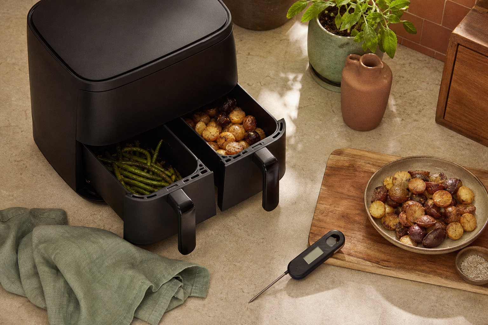

As an Amazon Associate I earn from qualifying purchases. This site contains sponsored product links. Prices and availability are shown on Amazon — check Amazon for current details. Full disclosure
Countertop cooking · Season: Everyday
Basket or oven-style air fryer: what should you compare?
Two baskets that finish together vs. one big oven cavity. Compare capacity, footprint, and cleanup across the three air fryers in the shop.
By the ShopNow Kitchen Desk · Updated 2026-11-20 · 2 min read · How we check · Sources

Editorial illustration: kitchen counter with an air fryer, a probe thermometer and a board of roasted potatoes. Not a product photograph.
Emeril Lagasse Extra Large French Door Air Fryer Toaster Oven Combo, 24 Cooking Functions and Digital Controls, 7 Accessories Included, Stainless Steel Finish, 26QT Capacity
Chefman TurboFry Touch Air Fryer, XL 8-Qt Family Size, One-Touch Digital Control Presets, French Fries, Chicken, Meat, Fish, Nonstick Dishwasher-Safe Parts, Automatic Shutoff, Stainless Steel
Capacity: 8 Quarts
Size: 12.75"D x 13.5"W x 10"H
Weight: 12.8 Pounds
Model: RJ38-SQSS-8T (listing also shows 'Large Air Fryer' — see FLG-005)
ThermoMaven 1 Sec Professional Digital Meat Thermometer, ±0.5℉ Accuracy | NIST&NSF Certified Food Thermometer, Auto-Rotate Bright LED Screen, Highly Waterproof for Grill BBQ Camping, Black
How to read this page: every “Check on Amazon” button is a sponsored link, marked Sponsored. Prices and availability live on Amazon, not here. The specs are copied from Amazon’s own listings on 2026-11-20; where a cell is blank it is because we could not confirm the value, and we would rather show you a gap than a guess.
One thermometer you spot-check with, and one that stays in the food and tells you when to stop. The difference is not luxury — it is what you can walk away from.
21 sources on the verification register. Every product row links to the listing it came from, with the date it was read.
17 items we could not confirm, published on Flagged for review with the action that would settle each one.
Intended product and observed redirect are stored as separate fields, on purpose: a link that redirects somewhere is not proof of what someone meant.
16 open questions (5 of them blocking) are on one page: Open questions.
Get the next comparison — checklist first, hype never.
One email when a new guide publishes.
The honest version: this is a static site, so submitting only records a reader_capture_submit count inside your own browser and takes you to the measurement page. No list exists and nothing reaches a server until the owner wires up an email provider — see FLG-013.
What we do not do
No “best” rankings without a stated method. We compare listed specs; you decide.
No invented hands-on testing. Nobody on this desk has cooked with these five units, so no page claims it.
No copied Amazon descriptions, no scraped Amazon images, no countdown timers, no “only 3 left in stock”.